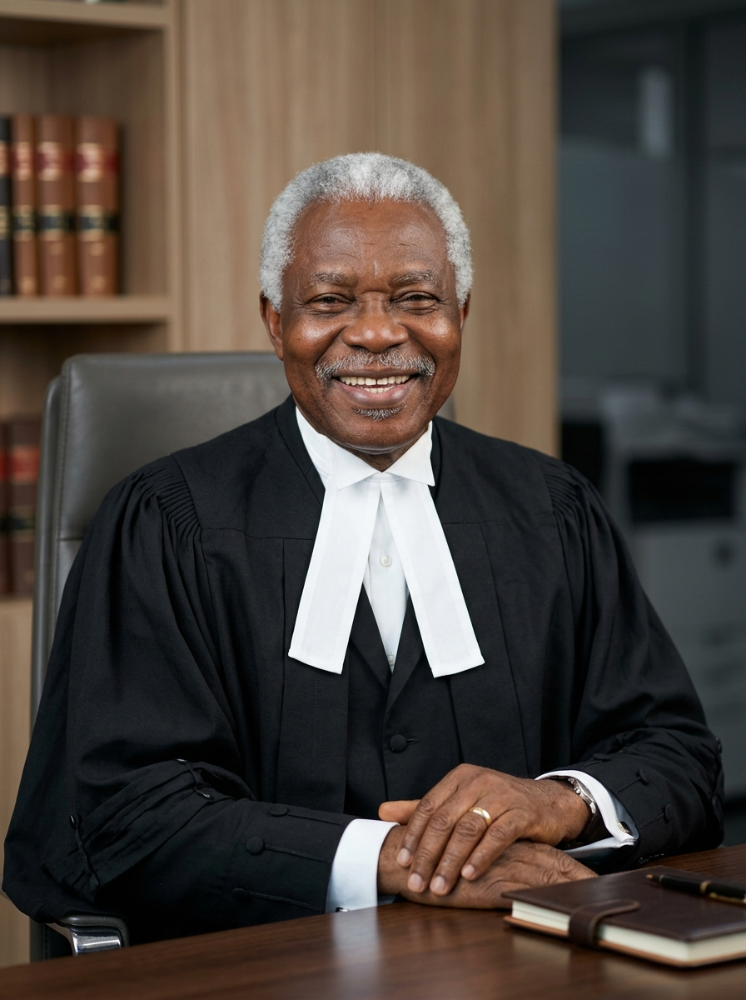
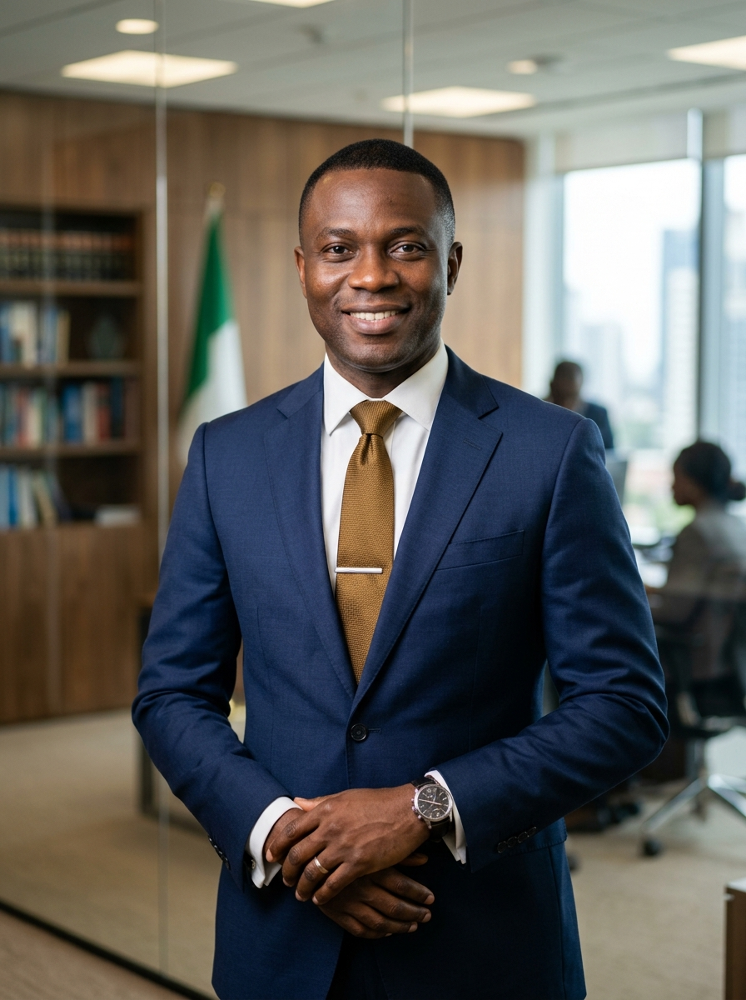

Led by an icon of the Nigerian Inner Bar, our team blends over five decades of institutional heritage with dynamic modern legal expertise.

Chief Peter Adebayo Omolope Olorunnisola, SAN, is the Founding and Principal Partner of P.A.O. Olorunnisola SAN & Co. He is an elder statesman, an icon of the Nigerian Inner Bar, and a deeply respected legal strategist with over five decades of active courtroom and advisory experience. Elevated to the prestigious rank of Senior Advocate of Nigeria (SAN), Chief Olorunnisola has dedicated his career to the pursuit of justice, institutional integrity, and socioeconomic reformation in Nigeria.
A former Attorney General and Commissioner for Justice for Kwara State, his career bridges the peak of public legal service with elite private practice. He remains a foundational figure in the Nigerian Bar Association (NBA) Ilorin Branch and a trusted arbiter in state and national affairs.

Olasunkanmi Timothy Olorunnisola is the Managing Partner of P.A.O. Olorunnisola SAN & Co, guiding the firm's strategic operations, client relationship frameworks, and commercial litigation practice. Taking the reins of leadership early in his career, O.T. (as he is fondly called) has discharged his management duties beautifully, expanding the firm's client portfolio and supervising high-impact commercial briefs reported in leading Nigerian law archives.
Mojirola Helen Ibiyemi serves as the Head of Chambers, coordinating courtroom preparation, legal research drafts, and day-to-day administrative functions of the firm's practitioners. An adventurous goal-getter and vocal advocate for women's leadership, Mojirola joined the firm as an associate and rose quickly due to her unyielding diligence and intellectual brilliance.
We are constantly seeking brilliant, passionate, and value-driven legal practitioners, advocates, and pupil associates to join our growing team. If you wish to protect legacies and build a stellar legal career, we welcome your inquiries.